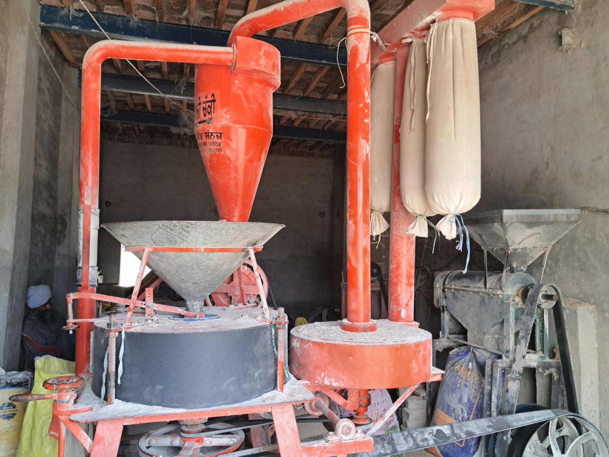
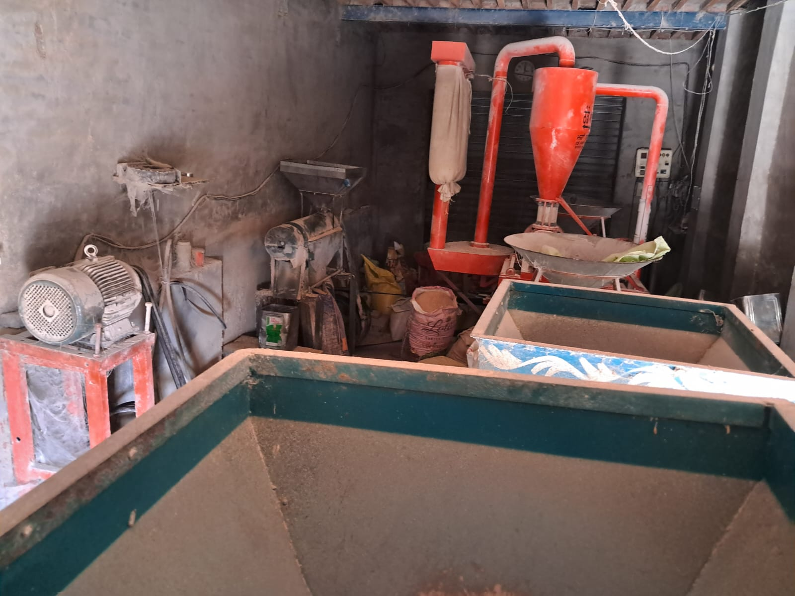
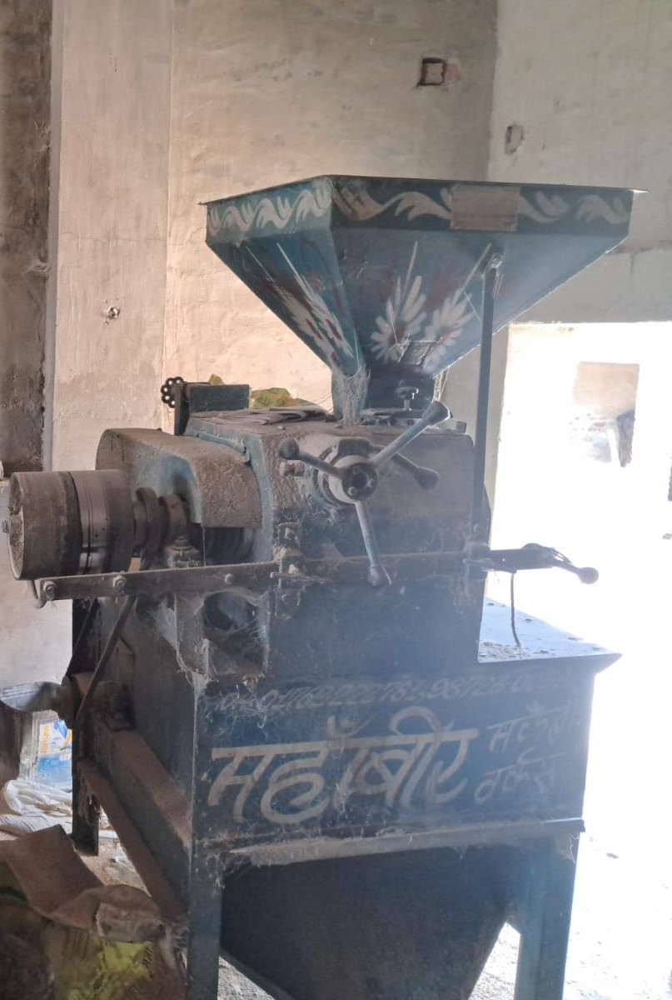
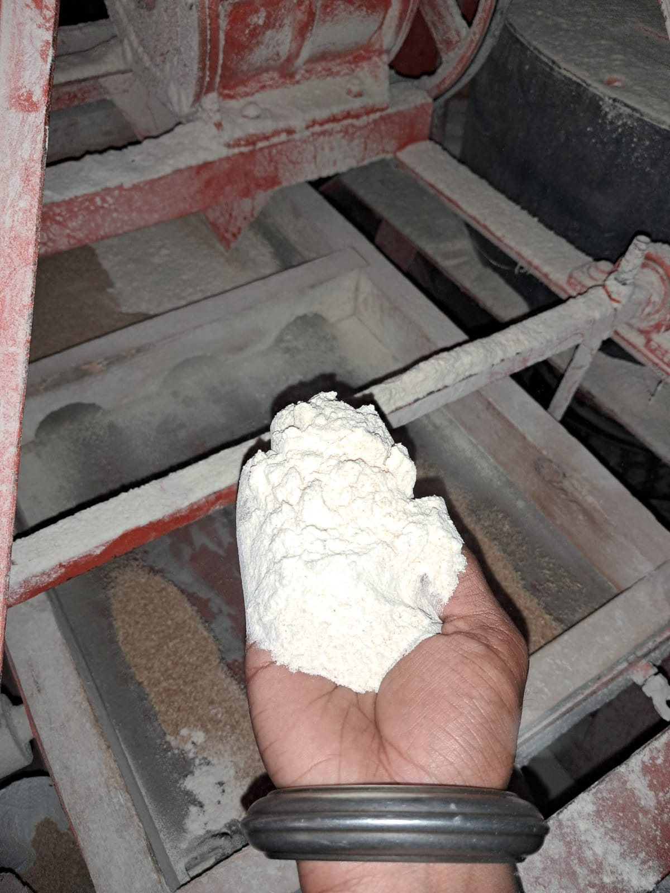
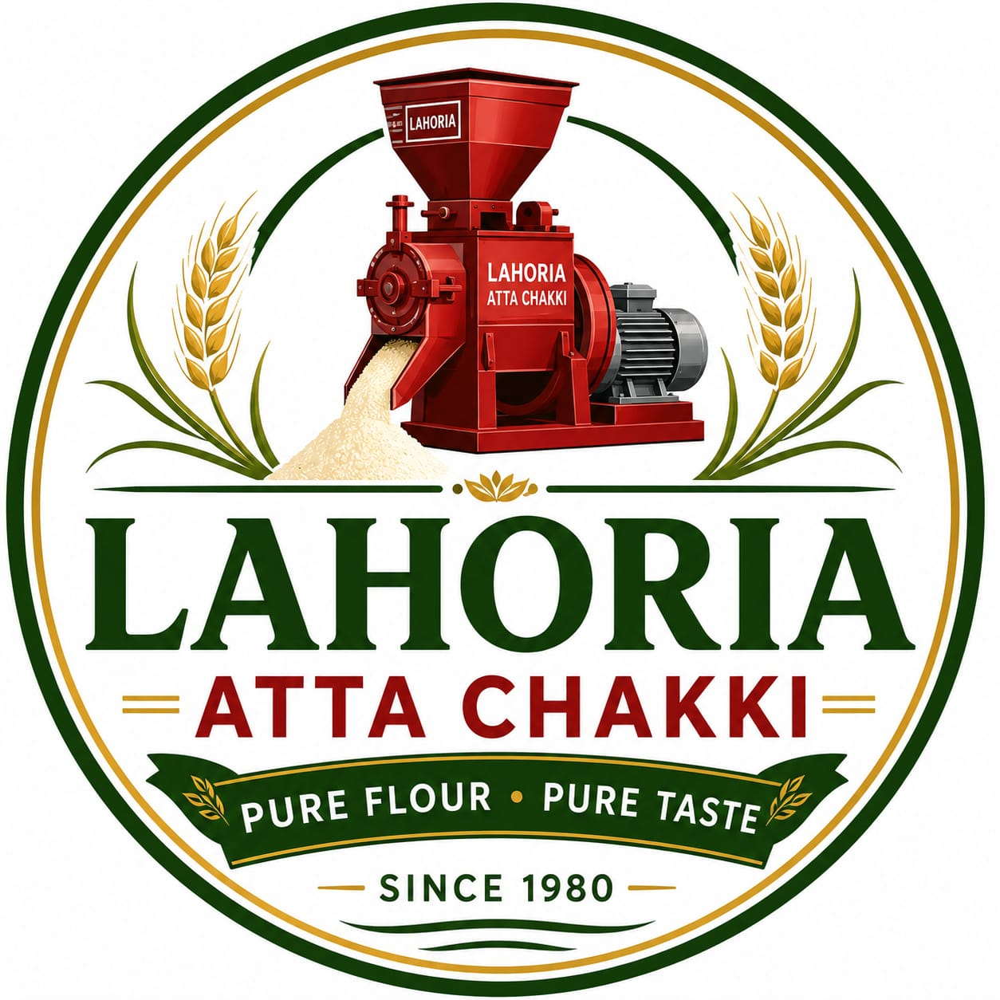
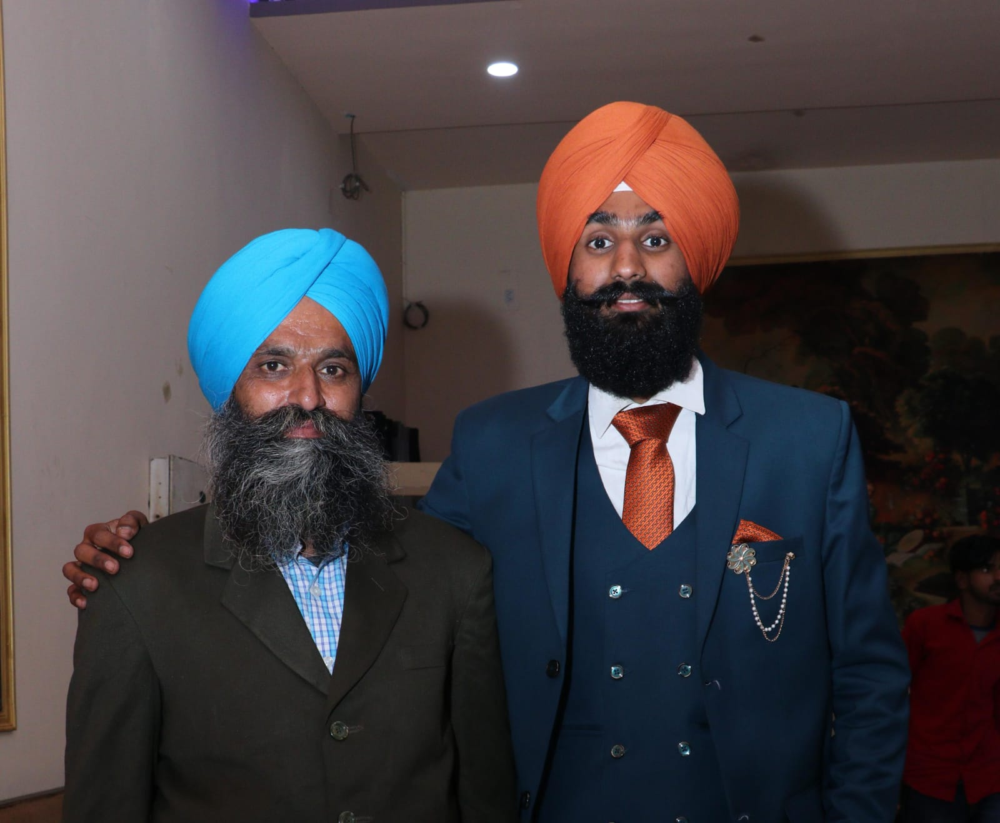

OUR GALLERY
Inside Lahoria Atta Chakki
Take a look at our flour mill, machines and quality process.






PURE FLOUR • HEALTHY LIFE
Welcome to Lahoria Atta Chakki. We prepare fresh hygienic flour using quality grains and modern grinding machines. Customer satisfaction and purity are our first priority.
Fresh & Healthy Flour
Best Quality Grains
Thousands of Happy Customers
Clean Processing

Lahoria Atta Chakki has been serving customers with fresh and hygienic flour for many years. We believe that pure flour is the key to a healthy family.
Our flour is prepared using carefully selected grains and modern grinding machines. Every product is processed with cleanliness, quality and customer satisfaction as our highest priority.
We prepare fresh flour daily using high-quality grains.
Freshly ground whole wheat flour. Soft, nutritious and perfect for daily chapatis.
Premium quality maize flour. Best for Makki di Roti with natural taste.
Healthy blend of wheat and nutritious grains. Rich in fibre and protein.
We provide fresh, hygienic and premium quality flour every day.
Only carefully selected grains are used for grinding.
Advanced grinding machines ensure better quality flour.
Clean environment and safe handling throughout the process.
Soft, fresh and nutritious flour for your family.
Serving customers with honesty, quality and satisfaction.
Fresh flour prepared every day for the best taste.
Customer satisfaction is our biggest achievement.
Fresh flour every time. Excellent quality and very hygienic.
Best Makki Atta in our area. Highly recommended.
Pure flour with excellent taste. Friendly owner and good service.